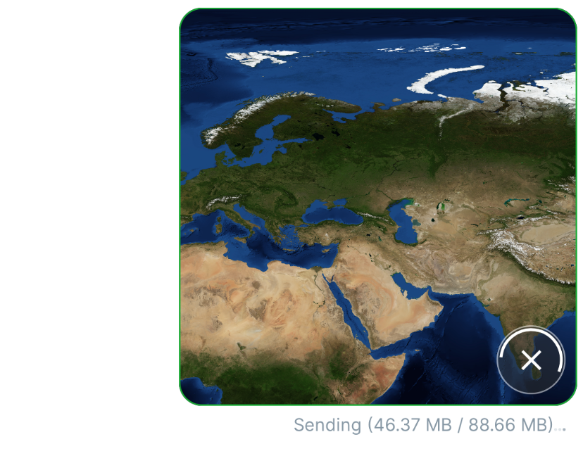
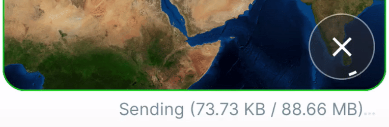
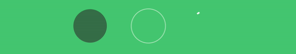
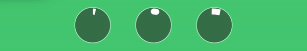
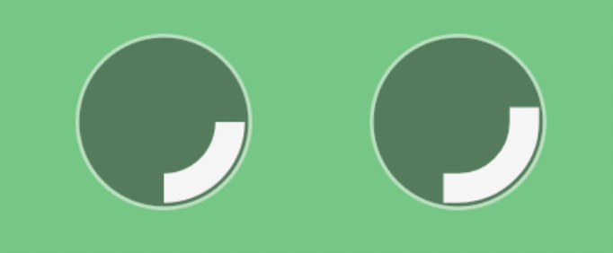
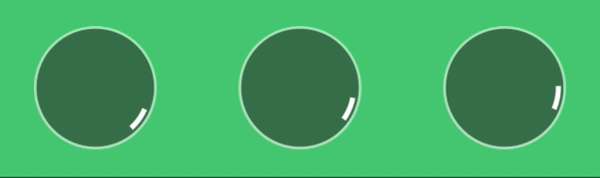
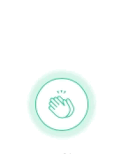

构建和 Telegram 一样的上传动画

前段时间，我研究了一个新功能：在 app 内部聊天中发送图片。这个功能本身很大，包括了多种东西，但实际上，最初并没有设计上传动画与取消上传的功能。当我用到这部分的时候，我决定增加图片上传动画，所以我们就给他们这个功能吧：)

View vs. Drawable
其实，这是个好问题。因为如果我们看看我的其他一篇关于声纳类动画的文章，我在那里用了一个 Drawable。在我个人看来，StackOverflow 这里就有个很好的简洁的答案。
Drawable只响应绘制操作，而 View 响应绘制和用户界面，比如触摸事件和关闭屏幕等等。
现在我们来分析一下，我们想要做什么。我们希望有一条无限旋转的弧线做圆形动画，并且弧线的圆心角不断增加直到圆心角等于 2π。我觉得一个 Drawable 应该能够帮上我的忙，而且实际上我也应该那样做，但我没有。
我没有这样做的原因在上面示例图片中的文字右边那三个小的点点的动画上。我已经用自定义 View 完成了这个动画，并且我已经为无限循环的动画准备了背景。对我来说把动画准备逻辑提取到父 View 中重用，而不是把所有东西都重写成 Drawable，应该是更简单的。所以我并不是说我的解决方案是正确的（其实没有什么是正确的），而是它满足了我的需求。
Base InfiniteAnimationView
为了自己的需要，我将把想要的进度视图分成两个视图：
ProgressView—— 负责绘制所需的进度 ViewInfiniteAnimateView—— 抽象 View，它负责动画的准备、启动和停止。由于进度中包含了无限旋转的部分，我们需要了解什么时候需要启动这个动画，什么时候需要停止这个动画
在查看了 Android 的 ProgressBar 的源代码后，我们可以最终得到这样的结果：
// InfiniteAnimateView.kt
abstract class InfiniteAnimateView @JvmOverloads constructor(
context: Context, attrs: AttributeSet? = null, defStyleAttr: Int = 0
) : View(context, attrs, defStyleAttr) {
private var isAggregatedVisible: Boolean = false
private var animation: Animator? = null
override fun onVisibilityAggregated(isVisible: Boolean) {
super.onVisibilityAggregated(isVisible)
if (isAggregatedVisible != isVisible) {
isAggregatedVisible = isVisible
if (isVisible) startAnimation() else stopAnimation()
}
}
override fun onAttachedToWindow() {
super.onAttachedToWindow()
startAnimation()
}
override fun onDetachedFromWindow() {
stopAnimation()
super.onDetachedFromWindow()
}
private fun startAnimation() {
if (!isVisible || windowVisibility != VISIBLE) return
if (animation == null) animation = createAnimation().apply { start() }
}
protected abstract fun createAnimation(): Animator
private fun stopAnimation() {
animation?.cancel()
animation = null
}
}
遗憾的是，主要出于 onVisibilityAggregated 方法的原因，它并无法工作 —— 因为[这个方法在 API 24 以上才被支持](https://developer.android.com/reference/android/view/View#onVisibilityAggregated(boolean%29)。此外，我还遇到了 !isVisible || windowVisibility != VISIBLE 上的问题，当视图是可见的，但它的容器却不可见。所以我决定重写这个：
// InfiniteAnimateView.kt
abstract class InfiniteAnimateView @JvmOverloads constructor(
context: Context, attrs: AttributeSet? = null, defStyleAttr: Int = 0
) : View(context, attrs, defStyleAttr) {
private var animation: Animator? = null
/**
* 我们不可以使用 `onVisibilityAggregated` 方法，因为它只在 SDK 24 以上被支持，而我们的最低 SDK 是 21
*/
override fun onVisibilityChanged(changedView: View, visibility: Int) {
super.onVisibilityChanged(changedView, visibility)
if (isShown) startAnimation() else stopAnimation()
}
override fun onAttachedToWindow() {
super.onAttachedToWindow()
startAnimation()
}
override fun onDetachedFromWindow() {
stopAnimation()
super.onDetachedFromWindow()
}
private fun startAnimation() {
if (!isShown) return
if (animation == null) animation = createAnimation().apply { start() }
}
protected abstract fun createAnimation(): Animator
private fun stopAnimation() {
animation?.cancel()
animation = null
}
}
不幸的是，这也没有用（虽然我觉得它应该能够正常工作的）。说实话，我不知道问题的具体原因。可能在普通的情况下会有效，但是对于 RecyclerView 就不行了。前段时间我就遇到了这个问题：如果使用 isShown 来跟踪一些东西是否在 RecyclerView 中显示。因此可能我的最终解决方案并不正确，但至少在我的方案中，它能按照我的期望工作：
// InfiniteAnimateView.kt
abstract class InfiniteAnimateView @JvmOverloads constructor(
context: Context, attrs: AttributeSet? = null, defStyleAttr: Int = 0
) : View(context, attrs, defStyleAttr) {
private var animation: Animator? = null
/**
* 我们不可以使用 `onVisibilityAggregated` 方法，因为它只在 SDK 24 以上被支持，而我们的最低 SDK 是 21
*/
override fun onVisibilityChanged(changedView: View, visibility: Int) {
super.onVisibilityChanged(changedView, visibility)
if (isDeepVisible()) startAnimation() else stopAnimation()
}
override fun onAttachedToWindow() {
super.onAttachedToWindow()
startAnimation()
}
override fun onDetachedFromWindow() {
stopAnimation()
super.onDetachedFromWindow()
}
private fun startAnimation() {
if (!isAttachedToWindow || !isDeepVisible()) return
if (animation == null) animation = createAnimation().apply { start() }
}
protected abstract fun createAnimation(): Animator
private fun stopAnimation() {
animation?.cancel()
animation = null
}
/**
* 可能这个函数上实现了 View.isShown，但我发觉到它有一些问题。
* 我在 Lottie lib 中也遇到了这些问题。不过因为我们总是没有时间去深入研究
* 我决定使用了这个简单的方法暂时解决这个问题，只为确保它能够正常运转
* 我到底需要什么 = =
*
* 更新：尝试使用 isShown 代替这个方法，但没有成功。所以如果你知道
* 如何改进，欢迎评论区讨论一下
*/
private fun isDeepVisible(): Boolean {
var isVisible = isVisible
var parent = parentView
while (parent != null && isVisible) {
isVisible = isVisible && parent.isVisible
parent = parent.parentView
}
return isVisible
}
private val View.parentView: ViewGroup? get() = parent as? ViewGroup
}
进度动画
准备
那么首先我们来谈谈我们 View 的结构。它应该包含哪些绘画组件？在当前情境下最好的表达方式就是声明不同的 Paint。
// progress_paints.kt
private val bgPaint = Paint(Paint.ANTI_ALIAS_FLAG).apply {
style = Paint.Style.FILL
color = defaultBgColor
}
private val bgStrokePaint = Paint(Paint.ANTI_ALIAS_FLAG).apply {
style = Paint.Style.STROKE
color = defaultBgStrokeColor
strokeWidth = context.resources.getDimension(R.dimen.chat_progress_bg_stroke_width)
}
private val progressPaint = Paint(Paint.ANTI_ALIAS_FLAG).apply {
style = Paint.Style.STROKE
strokeCap = Paint.Cap.BUTT
strokeWidth = context.resources.getDimension(R.dimen.chat_progress_stroke_width)
color = defaultProgressColor
}
为了展示我将改变笔触的宽度和其他东西，所以你会看到某些方面的不同。这 3 个 Paint 就与 3 个关键部分的进度相关联：

左： background; 中： stroke; 右： progress
你可能想知道为什么我要用 Paint.Cap.BUTT。好吧，为了让这个进度更 "Telegram"（至少在 iOS 设备上是这样），你应该使用 Paint.Cap.ROUND。让我来演示一下这三种可能的样式之间的区别（这里增加了描边宽度以让差异更明显）。

左： Cap.BUTT，中： Cap.ROUND，右： Cap.SQUARE
因此，主要的区别是，Cap.ROUND 给笔画的角以特殊的圆角，而 Cap.BUTT 和 Cap.SQUARE 只是切割。Cap.SQUARE 也和 Cap.ROUND 一样预留了额外的空间，但没有圆角效果。这可能导致 Cap.SQUARE 显示的角度与 Cap.BUTT 相同但预留了额外的空间。

试图用 Cap.BUTT 和 Cap.SQUARE 来显示 90 度。
考虑到所有这些情况，我们最好使用 Cap.BUTT，因为它比 Cap.SQUARE 显示的角度表示更恰当。
顺便说一下
Cap.BUTT是画笔默认的笔刷类型。这里有一个官方的文档链接。但我想向你展示真正的区别，因为最初我想让它变成ROUND，然后我开始使用SQUARE，但我注意到了一些特性。
Base Spinning
动画本身其实很简单，因为我们有 InfiniteAnimateView：
ValueAnimator.ofFloat(currentAngle, currentAngle + MAX_ANGLE)
.apply {
interpolator = LinearInterpolator()
duration = SPIN_DURATION_MS
repeatCount = ValueAnimator.INFINITE
addUpdateListener {
currentAngle = normalize(it.animatedValue as Float)
}
}
其中 normalize 是一种简单的方法用于将任意角缩小回 [0, 2π) 区间内。例如，对于角度 400.54 normalize 后就是 40.54。
private fun normalize(angle: Float): Float {
val decimal = angle - angle.toInt()
return (angle.toInt() % MAX_ANGLE) + decimal
}
测量与绘制
我们将依靠由父视图提供的测量尺寸或使用在 xml 中定义的精确的 layout_width、layout_height 值进行绘制。因此，我们在 View 的测量方面不需要任何事情，但我们会使用测量的尺寸来准备进度矩形并在其中绘制 View。
嗯，这并不难，但我们需要记住一些事情：
- 我们不能只拿
measuredWidth、measuredHeight来画圆圈背景、进度、描边（主要是描边的原因）。如果我们不考虑描边的宽度，也不从尺寸计算中减去它的一半，我们最终会得到看起来像切开的边界：

- 如果我们不考虑笔触的宽度，我们可能最终会在绘图阶段将其重叠。（这对于不透明的颜色来说是可以的）
但是，如果你将使用半透明的颜色，你就会看到很奇怪的重叠（我增加了笔触宽度以更清晰地展示问题所在）。
扫描动画的角度
好了，最后是进度本身。假设我们可以把它从 0 改成 1：
@FloatRange(from = .0, to = 1.0, toInclusive = false)
var progress.Float = 0f Float = 0f
为了绘制弧线，我们需要计算一个特殊的扫描动画的角度，而它就是绘图部分的一个特殊角度。360 —— 一个完整的圆将被绘制。90 —— 将画出圆的四分之一。
所以我们需要将进度转换为度数，同时，我们需要保持扫描角不为 0。也就是说即便 progress 值等于 0，我们也要绘制一小块的进度。
private fun convertToSweepAngle(progress: Float): Float =
MIN_SWEEP_ANGLE + progress * (MAX_ANGLE - MIN_SWEEP_ANGLE)
其中 MAX_ANGLE = 360（当然你可以自定义为任何角度），MIN_SWEEP_ANGLE 是最小的进度，以度数为单位。最小进度会在 progress = 0 就会代替 progress 值。
代码放一起！
现在将所有的代码合并一起，我们就可以构建完整的 View 了：
// ChatProgressView.kt
class ChatProgressView @JvmOverloads constructor(
context: Context, attrs: AttributeSet? = null, defStyleAttr: Int = 0
) : InfiniteAnimateView(context, attrs, defStyleAttr) {
private val defaultBgColor: Int = context.getColorCompat(R.color.chat_progress_bg)
private val defaultBgStrokeColor: Int = context.getColorCompat(R.color.chat_progress_bg_stroke)
private val defaultProgressColor: Int = context.getColorCompat(R.color.white)
private val progressPadding = context.resources.getDimension(R.dimen.chat_progress_padding)
private val bgPaint = Paint(Paint.ANTI_ALIAS_FLAG).apply {
style = Paint.Style.FILL
color = defaultBgColor
}
private val bgStrokePaint = Paint(Paint.ANTI_ALIAS_FLAG).apply {
style = Paint.Style.STROKE
color = defaultBgStrokeColor
strokeWidth = context.resources.getDimension(R.dimen.chat_progress_bg_stroke_width)
}
private val progressPaint = Paint(Paint.ANTI_ALIAS_FLAG).apply {
style = Paint.Style.STROKE
strokeWidth = context.resources.getDimension(R.dimen.chat_progress_stroke_width)
color = defaultProgressColor
}
@FloatRange(from = .0, to = 1.0, toInclusive = false)
var progress: Float = 0f
set(value) {
field = when {
value < 0f -> 0f
value > 1f -> 1f
else -> value
}
sweepAngle = convertToSweepAngle(field)
invalidate()
}
// [0, 360)
private var currentAngle: Float by observable(0f) { _, _, _ -> invalidate() }
private var sweepAngle: Float by observable(MIN_SWEEP_ANGLE) { _, _, _ -> invalidate() }
private val progressRect: RectF = RectF()
private var bgRadius: Float = 0f
init {
attrs?.parseAttrs(context, R.styleable.ChatProgressView) {
bgPaint.color = getColor(R.styleable.ChatProgressView_bgColor, defaultBgColor)
bgStrokePaint.color = getColor(R.styleable.ChatProgressView_bgStrokeColor, defaultBgStrokeColor)
progressPaint.color = getColor(R.styleable.ChatProgressView_progressColor, defaultProgressColor)
}
}
override fun onMeasure(widthMeasureSpec: Int, heightMeasureSpec: Int) {
super.onMeasure(widthMeasureSpec, heightMeasureSpec)
val horizHalf = (measuredWidth - padding.horizontal) / 2f
val vertHalf = (measuredHeight - padding.vertical) / 2f
val progressOffset = progressPadding + progressPaint.strokeWidth / 2f
// 由于笔画在线的中心，我们需要为它留出一半的安全空间，否则它将被截断的界限
bgRadius = min(horizHalf, vertHalf) - bgStrokePaint.strokeWidth / 2f
val progressRectMinSize = 2 * (min(horizHalf, vertHalf) - progressOffset)
progressRect.apply {
left = (measuredWidth - progressRectMinSize) / 2f
top = (measuredHeight - progressRectMinSize) / 2f
right = (measuredWidth + progressRectMinSize) / 2f
bottom = (measuredHeight + progressRectMinSize) / 2f
}
}
override fun onDraw(canvas: Canvas) {
super.onDraw(canvas)
with(canvas) {
//(radius - strokeWidth) - because we don't want to overlap colors (since they by default translucent)
drawCircle(progressRect.centerX(), progressRect.centerY(), bgRadius - bgStrokePaint.strokeWidth / 2f, bgPaint)
drawCircle(progressRect.centerX(), progressRect.centerY(), bgRadius, bgStrokePaint)
drawArc(progressRect, currentAngle, sweepAngle, false, progressPaint)
}
}
override fun createAnimation(): Animator = ValueAnimator.ofFloat(currentAngle, currentAngle + MAX_ANGLE).apply {
interpolator = LinearInterpolator()
duration = SPIN_DURATION_MS
repeatCount = ValueAnimator.INFINITE
addUpdateListener { currentAngle = normalize(it.animatedValue as Float) }
}
/**
* 将任意角转换至 [0, 360)
* 比如说 angle = 400.54 => return 40.54
* angle = 360 => return 0
*/
private fun normalize(angle: Float): Float {
val decimal = angle - angle.toInt()
return (angle.toInt() % MAX_ANGLE) + decimal
}
private fun convertToSweepAngle(progress: Float): Float =
MIN_SWEEP_ANGLE + progress * (MAX_ANGLE - MIN_SWEEP_ANGLE)
private companion object {
const val SPIN_DURATION_MS = 2_000L
const val MIN_SWEEP_ANGLE = 10f //in degrees
const val MAX_ANGLE = 360 //in degrees
}
}
补充！
补充一下，我们可以在 drawArc 这个方法上拓展一下。你看我们有一个 currentAngle 代表了绘制圆弧的起始点的角度，还有一个 sweepAngle 代表了我们需要绘制多少度数的圆弧。
当进度增加时，我们只改变 sweepAngle，也就是说，如果 currentAngle 是静态值（不变），那么我们将看到增加的圆弧只有一个方向。我们可以试着修改一下。考虑一下三种情况并看看结果分别是怎样的：
// 1. 在这种情况下，弧线只在一个方向上 "增加"
drawArc(progressRect, currentAngle, sweepAngle, false, progressPaint)
// 2. 在这种情况下，弧线在两个方向上 "增加"
drawArc(progressRect, currentAngle - sweepAngle / 2f, sweepAngle, false, progressPaint)
// 3. 在这种情况下，弧线向另一个方向 "增加"
drawArc(progressRect, currentAngle - sweepAngle, sweepAngle, false, progressPaint)
而结果是：

**左：**第一种情况；**中：**第二种情况；右：第三种情况
如你所见，左边和右边的动画（方案一、三）在速度上并不一致。第一个给人的感觉是旋转速度加快，进度增加，而最后一个则相反，给人的感觉是旋转速度变慢。而反之则是进度递减。
不过中间的动画在旋转速度上是一致的。所以，如果你不是增加进度（比如上传文件），或者只是减少进度（比如倒计时），那么我建议使用第二个方案。
后记
动画是伟大的。像素是伟大的。形状是伟大的。我们只需要用爱仔细对待它们。因为细节是产品中最有价值的东西;)

如果你喜欢这篇文章，别忘了点赞关注收藏一键三连！如果你有什么问题，可以评论我，我们来讨论一下。祝你编程愉快!
如果发现译文存在错误或其他需要改进的地方，欢迎到 掘金翻译计划 对译文进行修改并 PR，也可获得相应奖励积分。文章开头的 本文永久链接 即为本文在 GitHub 上的 MarkDown 链接。
掘金翻译计划 是一个翻译优质互联网技术文章的社区，文章来源为 掘金 上的英文分享文章。内容覆盖 Android、iOS、前端、后端、区块链、产品、设计、人工智能等领域，想要查看更多优质译文请持续关注 掘金翻译计划、官方微博、知乎专栏。